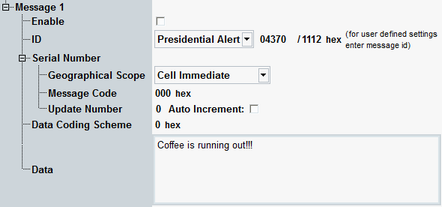

Message Settings
This section configures parameters of the "Messaging (CBS)", message.
Option R&S CMW-KS170 is required.

CBS - message parameters
Configures the particular CB message.
Sets the message ID and ID type as defined in the 3GPP TS 23.041, 9.4. Edit this parameter for user-defined settings. Also, hexadecimal values are displayed for information.
Remote command:Sets the serial number as defined in the 3GPP TS 23.041, 9.4.
This CB message unique identification consists of the following three parts:
- Geographical scope: message code validity area
- Message code: 10 bits number
- Update number: version of a CB message
When using "Auto Increment", the update number is changed upon change of any of the CBS parameters in the signaling application.